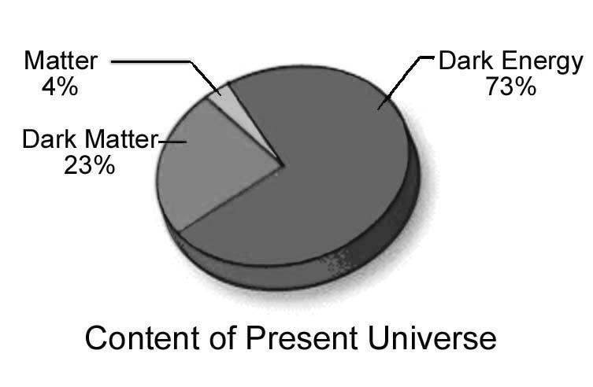

The Surah discusses the jinn, including those who belong to the group of Satan (Iblis).
সূরাটি শয়তানের (ইবলিস) দলের অন্তর্ভুক্ত জিনদের নিয়ে আলোচনা করেছে।
Tafsir of the Surah Section 1 of Chapter 72 [Verse 1-5]: Wonderful Recital
সূরা 72 অধ্যায়ের 1 ধারার তাফসির [আয়াত 1-5]: বিস্ময়কর আবৃত্তি
Say: ―It has been revealed to me that a company of jinns listened. They said, ―We have really heard a wonderful recital! It gives guidance to the right, and we have believed therein. We shall not join any with our Lord. And exalted is the majesty of our Lord; He has taken neither a wife nor a son. And that he (Satan / Iblis) used to speak the foolish among us against God an excessive transgression. But, we do think that no man or jinn should say aught that is untrue against God.‖ Remarks:
বলুন, আমার কাছে ওহী করা হয়েছে যে, একদল জিন শ্রবণ করেছিল। তারা বললেন, আমরা সত্যিই একটি চমৎকার আবৃত্তি শুনেছি! এটি সঠিক দিক নির্দেশনা দেয় এবং আমরা এতে বিশ্বাস করেছি। আমরা আমাদের প্রভুর সাথে কাউকে শরীক করব না। এবং আমাদের পালনকর্তার মহিমা উচ্চতর। তিনি স্ত্রী বা পুত্র গ্রহণ করেননি। এবং যে সে (শয়তান/ইবলিস) আমাদের মধ্যে মূর্খদেরকে আল্লাহর বিরুদ্ধে বাড়াবাড়ি সীমালঙ্ঘন বলে কথা বলত। কিন্তু, আমরা মনে করি যে কোনো মানুষ বা জ্বীনের এমন কিছু বলা উচিত নয় যা ঈশ্বরের বিরুদ্ধে অসত্য।'' মন্তব্য:
The jinn are intelligent creatures, and they will face the Final Judgment. They exist around us, but we cannot see or feel them, nor can our instruments detect them. They do not interact with our matter. The Quran states that they are created from 'the poisonous fire of the prairie of fire':
জিনরা বুদ্ধিমান প্রাণী, এবং তারা চূড়ান্ত বিচারের মুখোমুখি হবে। তারা আমাদের চারপাশে বিদ্যমান, কিন্তু আমরা তাদের দেখতে বা অনুভব করতে পারি না, বা আমাদের যন্ত্রগুলি তাদের সনাক্ত করতে পারে না। তারা আমাদের বিষয়ের সাথে যোগাযোগ করে না। কুরআন বলে যে তারা 'আগুনের প্রাইরির বিষাক্ত আগুন' থেকে সৃষ্টি হয়েছে:
―And the jinn race, We had created before, from the poisonous fire.‖ [Al Quran 15:27]
"এবং জিন জাতি, আমরা আগে সৃষ্টি করেছি বিষাক্ত আগুন থেকে।" [আল কুরআন 15:27]
―And He created Jinns from the prairie of fire‖ [Al Quran 55:15]
"এবং তিনি জ্বীনদের সৃষ্টি করেছেন অগ্নিকুণ্ড থেকে" [আল কুরআন 55:15]
All of the above suggests that they are made from anti-matter. This universe is a two-in-one universe, with a parallel anti-universe existing alongside it, inhabited by its anti-creatures. ―We now know that every particle has an anti- particle, with which it can annihilate (In case of the force carrying particles, the antiparticles are the same as the particles themselves). There could be whole anti-world and anti-people made out of anti-particles. However, if you meet your anti-self, do not shake hands! You would both vanish in a great flash of light‖ – A Brief History of Time by Stephen Hawking. I am not suggesting that jinn are our anti-self counterparts, but if the concept of an anti-self is scientifically plausible, then the idea of the jinn is not unscientific. A universe that contains five times more dark matter than ordinary matter should logically harbor creatures made from anti-matter (which is a form of dark matter).
উপরের সমস্তগুলি পরামর্শ দেয় যে তারা অ্যান্টি-ম্যাটার থেকে তৈরি। এই মহাবিশ্ব একটি টু-ইন-ওয়ান ইউনিভার্স, এর পাশাপাশি একটি সমান্তরাল অ্যান্টি-ইউনিভার্স বিদ্যমান, এর বিরোধী প্রাণীদের দ্বারা বসবাস করা হয়। - আমরা এখন জানি যে প্রতিটি কণার একটি অ্যান্টি-পার্টিকেল আছে, যার সাহায্যে এটি ধ্বংস করতে পারে (কণা বহনকারী শক্তির ক্ষেত্রে, প্রতিকণাগুলি কণার মতোই)। বিরোধী কণা দিয়ে তৈরি পুরো বিশ্ববিরোধী এবং জনবিরোধী হতে পারে। তবে নিজের বিরোধীদের সাথে দেখা হলে হাত মেলাবেন না! আপনি দুজনেই আলোর একটি দুর্দান্ত ঝলকানিতে অদৃশ্য হয়ে যাবেন - স্টিফেন হকিং এর সময়ের সংক্ষিপ্ত ইতিহাস। আমি পরামর্শ দিচ্ছি না যে জিনরা আমাদের আত্ম-বিরোধী প্রতিপক্ষ, তবে যদি আত্ম-বিরোধী ধারণাটি বৈজ্ঞানিকভাবে বিশ্বাসযোগ্য হয় তবে জ্বীনের ধারণাটি অবৈজ্ঞানিক নয়। একটি মহাবিশ্ব যা সাধারণ পদার্থের চেয়ে পাঁচগুণ বেশি অন্ধকার পদার্থ ধারণ করে যুক্তিযুক্তভাবে অ্যান্টি-ম্যাটার (যা অন্ধকার পদার্থের একটি রূপ) থেকে তৈরি প্রাণীদের আশ্রয় দেওয়া উচিত।
FIGURE 72.1

চিত্র 72_1 / Figure 72_1
চিত্র 72.1
চিত্র 72_1 / Figure 72_1
Matter and anti-matter are similar. Anti-matter is composed of anti-particles, while matter is made up of regular particles. When particles and anti-particles encounter each other, they annihilate one another, resulting in the creation of photons. However, particles and anti-particles are protected by force fields—such as the magnetic field associated with an electron or the strong nuclear force field surrounding a proton. Additionally, they may gain protection when forming atoms or anti-atoms. Much is still undiscovered. If Allah has created living creatures from matter and anti-matter, He has also created the systems to ensure their safety. Moreover, atoms and anti-atoms are largely empty. If an atom were compared to a football field, its nucleus would be equivalent to a marble. Thus, matter is transparent to anti-matter. At every moment, a significant amount of anti-matter passes through our bodies, yet we do not feel it. In reality, we do not often observe the collision of matter and anti-matter in nature. Regardless of whether we believe it or not, according to the Quran and Hadith, the jinn exist in this universe. The jinn are capable of moving through space and reaching the stars and planets. Additionally, there are angels assigned to guard their access points in different zones of the skies.
ম্যাটার এবং অ্যান্টি ম্যাটার একই রকম। অ্যান্টি-ম্যাটার অ্যান্টি-কণা দ্বারা গঠিত, যখন পদার্থ নিয়মিত কণা দ্বারা গঠিত। যখন কণা এবং বিরোধী কণা একে অপরের মুখোমুখি হয়, তারা একে অপরকে ধ্বংস করে, ফলে ফোটন সৃষ্টি হয়। যাইহোক, কণা এবং অ্যান্টি-কণাগুলি বল ক্ষেত্র দ্বারা সুরক্ষিত থাকে - যেমন একটি ইলেক্ট্রনের সাথে যুক্ত চৌম্বক ক্ষেত্র বা প্রোটনকে ঘিরে শক্তিশালী পারমাণবিক বল ক্ষেত্র। অতিরিক্তভাবে, পরমাণু বা অ্যান্টি-এটম গঠন করার সময় তারা সুরক্ষা পেতে পারে। অনেক কিছুই এখনো অনাবিষ্কৃত। আল্লাহ যদি জীবন্ত প্রাণীকে বস্তু এবং বিরোধী পদার্থ থেকে সৃষ্টি করে থাকেন, তবে তিনি তাদের নিরাপত্তা নিশ্চিত করার জন্য ব্যবস্থাও তৈরি করেছেন। তদুপরি, পরমাণু এবং অ্যান্টি-এটমগুলি অনেকাংশে খালি। যদি একটি পরমাণুকে একটি ফুটবল মাঠের সাথে তুলনা করা হয় তবে এর নিউক্লিয়াস একটি মার্বেলের সমতুল্য হবে। এইভাবে, পদার্থ বিরোধী পদার্থের কাছে স্বচ্ছ। প্রতি মুহূর্তে, একটি উল্লেখযোগ্য পরিমাণ অ্যান্টি-ম্যাটার আমাদের দেহের মধ্য দিয়ে যায়, তবুও আমরা তা অনুভব করি না। বাস্তবে, আমরা প্রায়শই প্রকৃতিতে পদার্থ এবং বিরোধী পদার্থের সংঘর্ষ লক্ষ্য করি না। আমরা বিশ্বাস করি বা না করি না কেন, কুরআন ও হাদিস অনুসারে এই মহাবিশ্বে জিনদের অস্তিত্ব রয়েছে। জ্বীনরা মহাকাশে চলাফেরা করতে এবং নক্ষত্র ও গ্রহে পৌঁছাতে সক্ষম। উপরন্তু, আকাশের বিভিন্ন অঞ্চলে তাদের অ্যাক্সেস পয়েন্ট পাহারা দেওয়ার জন্য ফেরেশতা নিযুক্ত রয়েছে।
―It is We who have set out fortresses in the Skies and made them fair-seeming to beholders, and We have guarded them from every satans (Jinns) accursed. But any that gains a hearing by stealth is pursued by a flaming fire, bright‖ [Al Quran 15: 16–18]
- আমরাই আসমানে দুর্গ স্থাপন করেছি এবং সেগুলোকে দর্শকদের কাছে সুন্দর করে দিয়েছি এবং অভিশপ্ত শয়তান (জিন) থেকে তাদের হেফাজত করেছি। কিন্তু যে কেউ চুপিসারে শ্রবণশক্তি অর্জন করে তার পিছনে জ্বলন্ত আগুন, উজ্জ্বল” [আল কুরআন 15:16-18]
True, there were persons among mankind who took shelter with persons among the jinns, but they (jinns) increased them in folly. And they (jinns) think as you thought that God would not raise up any one.
সত্য, মানবজাতির মধ্যে এমন কিছু ব্যক্তি ছিল যারা জিনদের মধ্যে মানুষের আশ্রয় নিয়েছিল, কিন্তু তারা (জিনরা) তাদের মূর্খতা বাড়িয়েছিল। আর তারা (জিন) মনে করে যেমন তোমরা ভেবেছিলে যে, আল্লাহ কাউকে পুনরুত্থিত করবেন না।
What the verses mean by, ―True, there were persons among mankind who took shelter with persons among the Jinns‖? The angels guard humans: ―For each there are in succession, before and behind him; they (angels) guard him by command of Allah…‖ [Al Quran 13:11]
আয়াতের অর্থ কি, "সত্যি, মানবজাতির মধ্যে এমন কিছু ব্যক্তি ছিল যারা জ্বীনদের মধ্যে আশ্রয় নিয়েছিল"? ফেরেশতারা মানুষকে হেফাজত করে: - প্রত্যেকের জন্য তার আগে এবং পিছনে পরপর রয়েছে; তারা (ফেরেশতারা) আল্লাহর নির্দেশে তাকে হেফাজত করে...” [আল কুরআন 13:11]
Therefore, it is not possible for a satanic jinni to defeat the angels and possess a human. However, since humans are under trial, the satanic jinn are allowed to whisper. However, if a human is an unbeliever and worships idols, the angels do not stop the jinn. In this case, the human may be possessed by a satanic jinn. Allah has made them allies to one another. This could be the way of 'seeking shelter among the jinn,' as the person is escaping the protection of the angels.
অতএব, একজন শয়তানী জ্বীনের পক্ষে ফেরেশতাদের পরাজিত করে মানুষের অধিকারী হওয়া সম্ভব নয়। যাইহোক, যেহেতু মানুষ বিচারাধীন, শয়তানী জিনদের ফিসফিস করার অনুমতি দেওয়া হয়েছে। যাইহোক, যদি একজন মানুষ অবিশ্বাসী হয় এবং মূর্তি পূজা করে, ফেরেশতারা জিনদের বাধা দেয় না। এই ক্ষেত্রে, মানুষ একটি শয়তানী জিন দ্বারা আবিষ্ট হতে পারে. আল্লাহ তাদেরকে একে অপরের মিত্র বানিয়েছেন। এটি 'জিনদের মধ্যে আশ্রয় খোঁজার' উপায় হতে পারে, যেহেতু ব্যক্তি ফেরেশতাদের সুরক্ষা থেকে পালিয়ে যাচ্ছে।
―A man is like a horse, whose back never remains vacant, either Allah is riding on him, or a satan.‖ [Hadith]
"মানুষ হল একটি ঘোড়ার মত, যার পিঠ কখনো খালি থাকে না, হয় আল্লাহ তার উপর চড়েছেন, নয়তো শয়তান।" [হাদিস]
The Hadith tells us that the main Satan (Iblis) has many followers among the jinn, each of whom is called a satan.
হাদিস আমাদেরকে বলে যে প্রধান শয়তান (ইবলিস) জিনদের মধ্যে অনেক অনুসারী রয়েছে, যাদের প্রত্যেককে শয়তান বলা হয়।
"After each human there is a satan, who is a bad jinn." [Hadith]
"প্রত্যেক মানুষের পরে একটি শয়তান থাকে, যে একটি খারাপ জিন।" [হাদিস]
Iblis, the leader of the satans, has his throne in the ocean. At the end of each day, all of his followers (satan jinns) report to him. It should be noted that not all jinn are followers of Iblis; there are many good and pious jinn as well. Causes of Following Iblis
শয়তানদের নেতা ইবলিস সমুদ্রে তার সিংহাসন রয়েছে। প্রতিটি দিনের শেষে, তার সমস্ত অনুসারী (শয়তান জিন) তাকে রিপোর্ট করে। উল্লেখ্য যে, সকল জ্বীন ইবলীসের অনুসারী নয়; অনেক ভালো এবং ধার্মিক জ্বীনও আছে। ইবলিসকে অনুসরণ করার কারণ
Why do some jinn follow Iblis and provoke humans to commit sinful deeds? The jinn are made of anti-matter from a different dimension, yet they have the ability to observe:
কেন কিছু জিন ইবলিসকে অনুসরণ করে এবং মানুষকে পাপ কাজ করতে প্ররোচিত করে? জিনরা ভিন্ন মাত্রা থেকে অ্যান্টি-ম্যাটার দিয়ে তৈরি, তবুও তাদের পর্যবেক্ষণ করার ক্ষমতা রয়েছে:
―…Verily, he (Iblis) and his tribe (satan jinns) watch you from a position where you cannot see them…‖ [Al Quran 7:27]
“নিশ্চয়ই, সে (ইবলিস) এবং তার গোত্র (শয়তান জ্বীন) তোমাকে এমন অবস্থান থেকে দেখছে যেখান থেকে তুমি তাদের দেখতে পাবে না...” [আল কুরআন 7:27]
A jinni can possess a pagan and enter the human dimension. We know that gravitational force attracts both matter and anti-matter equally. A human's nafs (soul) is a combination of unknown force fields, some of which, like gravitational force, may interact with anti-matter. A jinni connects its nafs with a human's nafs, sharing emotions, enjoying feelings, and perceiving senses. Thus, a jinni can possess a human.
একটি জিনি একটি পৌত্তলিক অধিকারী এবং মানুষের মাত্রা প্রবেশ করতে পারেন. আমরা জানি যে মহাকর্ষ বল পদার্থ এবং অ্যান্টি-ম্যাটার উভয়কেই সমানভাবে আকর্ষণ করে। একজন মানুষের নফস (আত্মা) হল অজানা বল ক্ষেত্রগুলির সংমিশ্রণ, যার মধ্যে কিছু, মহাকর্ষীয় বলের মতো, অ্যান্টি-ম্যাটারের সাথে যোগাযোগ করতে পারে। একটি জিনি তার নফগুলিকে মানুষের নফসের সাথে সংযুক্ত করে, আবেগ ভাগ করে নেয়, অনুভূতি উপভোগ করে এবং ইন্দ্রিয় উপলব্ধি করে। সুতরাং, একটি জিনি একটি মানুষের অধিকারী হতে পারে।